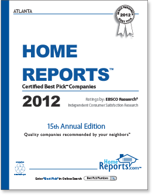

What Is Home Reports™?
Home Reports, which is published by EBSCO Research, provides unbiased, third-party ratings to help consumers select quality companies in dozens of categories.
As an independent research firm, we evaluate and document the performance of home service providers (like roofers and painters) through thousands of yearly interviews with homeowners who had direct experience with them. Home Reports also provides educational articles and consumer tips on a variety of home service and repair topics through its annual report and weekly blog.
As an independent research firm, we evaluate and document the performance of home service providers (like roofers and painters) through thousands of yearly interviews with homeowners who had direct experience with them. Home Reports also provides educational articles and consumer tips on a variety of home service and repair topics through its annual report and weekly blog.
What Is A Best Pick™?
In order to attain—and maintain—Best Pick status, companies must go through a rigorous certification process every year, which includes receiving an overall A-grade based on more than 100 homeowner reviews and complying with the Best Pick Company Pledge.
Our Best Pick companies also carry proper insurance and professional licenses and agree to honor contracts made with homeowners and suppliers.
Our Best Pick companies also carry proper insurance and professional licenses and agree to honor contracts made with homeowners and suppliers.
Mobile App
The Best Pick Mobile App, which is available from the App Store and Google Play, offers on-the-go access to local Best Pick companies. With the app, users can view detailed company descriptions and additional company reviews. A “favorites” option allows for quick access to preferred Best Picks. The app also features direct call access to all Best Pick companies as well as Facebook, Twitter, and email sharing of company information.
Download The App:
Download The App:
How Is Home Reports Funded?
Companies cannot buy the Best Pick designation—they must meet all of our stringent criteria to qualify and be listed in our report.
Only after a company meets the criteria and chooses to participate in the Best Pick Program does it pay to publicize the Best Pick certification it has earned.
Only after a company meets the criteria and chooses to participate in the Best Pick Program does it pay to publicize the Best Pick certification it has earned.
What Makes You Different?
With online review sites, it is difficult to tell who is truly posting the reviews or if the reviews represent a true sampling of that company’s customers. To avoid these potential pitfalls, we conduct our independent research using clearly defined principles and criteria; no outside data is permitted.
By taking into account more than 100 reviews from a random sample of a company’s customers, we get an actual representation of the quality of work each company provides.
By taking into account more than 100 reviews from a random sample of a company’s customers, we get an actual representation of the quality of work each company provides.
Find Best Pick Companies Serving Your Neighborhood
To view Certified Best Pick companies around you, please select your area of residence:
Can I Submit My Company for Consideration?
Of course! Click Here for more information.
© 1997-2012 EBSCO Research LLC. All Rights Reserved.